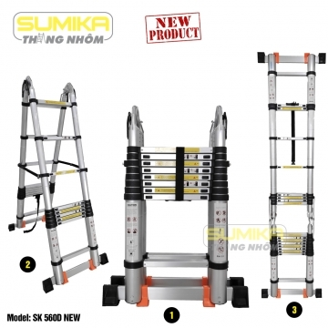
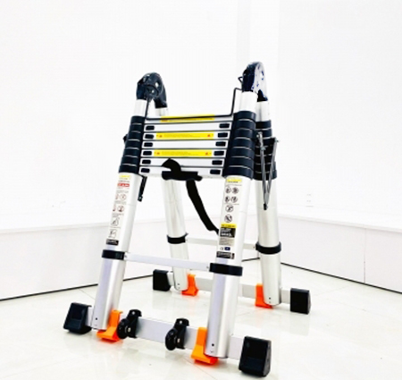

Thang nhôm rút đôi Sumika nào tốt? Mách nhỏ bạn!
Thang nhôm rút đôi hiện đang là một dòng thang phổ biến mà bất kỳ gia đình nào hiện nay cũng sở hữu ít nhất một cái.
Với thiết kế đa năng, kiểu dáng hiện đại, thang nhôm rút đôi Sumika khiến cho nhiều người tiêu dùng khó có thể lựa chọn một sản phẩm thay thế khác.
Vậy, thang nhôm rút đôi Sumika nào tốt? Tìm câu trả lời ngay trong bài viết dưới đây nhé!
1. Lý do nên chọn mua thang nhôm rút đôi Sumika sử dụng
Trước khi tìm hiểu xem chiếc thang nhôm rút đôi Sumika nào tốt thì hãy cùng biết xem vì sao chúng ta lên lựa chọn mua thang nhôm rút đôi để sử dụng và công dụng hữu ích của chiếc thang nhôm rút đôi là gì nhé.
Thang nhôm rút đôi được ra đời để thay thế cho những dòng thang truyền thống từ tre với độ an toàn thấp. Vậy lý do tại sao nhiều người dùng hiện nay chọn thang nhôm rút đôi là giải pháp thì dưới đây chúng ta có thể thấy được một số điểm nổi bật:
- Thang nhôm rút đôi Sumika sở hữu thiết kế gọn nhẹ, có thể thu ngắn dài tùy thuộc vào nhu cầu và có thể sử dụng trong những loại địa hình khác nhau
- Thang được làm từ hợp kim nhôm cao cấp, chống ăn mòn tốt, chịu được độ nén cao, thường dùng trong các công việc đặc thù như chế tạo cơ khí,
- Thiết kế của thang an toàn với người sử dụng, với thanh khóa an toàn giữ cho chân thang không bị trượt ra ngoài
- Phần chân của thang còn được trang bị thêm đế cao su giúp tăng độ ma sát và chống trơn trượt
2. Chọn mua thang nhôm rút đôi như thế nào phù hợp và tiện ích khi sử dụng
Để chọn mua một chiếc thang nhôm rút đôi tốt, điều tiên quyết đó chính là phù hợp với nhu cầu sử dụng. Bạn nên chọn lựa một chiếc thang với thiết kế chiều cao hợp lý, như vậy sẽ đáp ứng đúng yêu cầu công việc, chân thang phải chắc chắn, bọc đế cao su an toàn.
Ngoài ra, phần điều chỉnh dài ngắn cũng hết sức quan trọng. Khi chọn mua, bạn nên lưu ý độ dài có thể điều chỉnh tối đa là bao nhiêu và thu gọn là bao nhiêu.
Bên cạnh các yếu tố trên thì điều nên lưu ý đó chính là chất liệu thang, khóa chốt tự động, thang bạn chọn có thương hiệu sản xuất như nào từ đâu để đánh giá được chất lượng cũng như sản phẩm mình chọn có chính hãng hay không.

3. TOP những thang nhôm rút đôi Sumika đáng lựa chọn năm 2021
3.1. Thang nhôm rút đôi Sumika SK760D
Thang nhôm rút đôi Sumika SK760D đạt tiêu chuẩn an toàn Châu Âu, được sản xuất theo công nghệ Nhật Bản. Khách hàng hoàn toàn yên tâm trong quá trình sử dụng bởi thang được làm từ chất liệu nhôm hợp kim siêu bền chịu lực tốt, không gỉ sét.
Thang sở hữu cấu tạo thông minh với chốt khóa an toàn tự động đóng khi các ống thang được rút lên. Việc sử dụng thang cũng vô cùng đơn giản, khi cần bạn kéo nhẹ các ống thang lên trên tới độ cao mong muốn lên đến 7.6m. Khi không còn nhu cầu sử dụng, bạn chỉ cần mở hết các chốt khóa, khi đó, thang sẽ tự động hạ xuống chỉ còn 106cm.
Mức tải trọng lớn nhất mà thang có thể chịu được là 300Kg nên vẫn đảm bảo an toàn khi 2 người cùng làm việc. Nếu bạn làm việc trong điều kiện địa hình không bằng phẳng, có thể điều chỉnh độ cao chân thang hai bên để phù hợp với địa hình.

3.2. Thang nhôm rút đôi Sumika SK640D
Thang nhôm rút đôi Sumika SK640D được cải tiến với khóa có độ dày tốt hơn so với model cũ, giúp chịu lực tốt hơn và bảo vệ an toàn lên đến 300kg. Chất liệu làm thang từ hợp kim nhôm rất bền vững và chắc chắn. Phần ống thang được bao bọc bởi các đai nhựa cứng có độ đàn hồi rất tốt, hạn chế ống thang bị méo mó trong quá trình sử dụng, ôm trọn các khớp nối của ống thang.
Ở thang ngang được gia cố thêm 2 miếng nhựa màu cam nhằm bảo vệ thang mỗi khi dùng có tải trọng lớn giúp thang vẫn giữ vững có độ bám tốt và thăng bằng tốt.
3.3. Thang nhôm rút đôi Sumika SK500D
Thang nhôm rút đôi SK 500D được làm bằng chất liệu nhôm hợp kim siêu bền chịu lực tốt, không gỉ sét, trên dây chuyền công nghệ hiện đại, đạt tiêu chuẩn an toàn Châu Âu.
Thang sở hữu chốt khóa an toàn tự động đóng khi các ống thang được rút lên, cấu tạo thông minh dạng ống luồn ống. Việc biến hình của thang cũng rất dễ dàng với chiều cao tối đa là 5m và tự động hạ xuống chỉ còn 91cm, khi đó, bạn hoàn toàn có thể cất gọn sản phẩm ở bất kỳ nơi đâu.
Thang nhôm rút đôi SK 500D với đế cao su chống trượt cùng thanh ngang có 2 đế cao su chắc chắn nên hoàn toàn an toàn cho người dùng trong suốt quá trình sử dụng. Thang rút đôi SK 500D có khả năng chịu được tải trọng lớn chắc chắn sẽ là người phụ tá tốt dành cho bạn.

Các tin khác